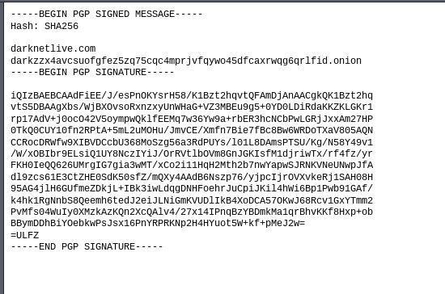
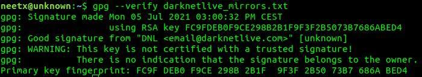

Hidden services verification
It's important to verify onion addresses to avoid scam, phishing or fake information. Ideally you should disable Javascript while surfing the dark web (and often the clearnet too), but sometimes you need it and in this situation you have to think (your brain is your best anti-malware) about the trust you are going to put into this address. A bad actor could exploit you with Javascript code, so you need to verify the hidden service is provided by a trusted source.
For example we can take Darknetlive hidden service and verify its onion address by its pgp key.
Darknetlive onion address: http://darkzzx4avcsuofgfez5zq75cqc4mprjvfqywo45dfcaxrwqg6qrlfid.onion
To get its pgp key you have to append /pgp.txt, sometimes you could find the key published on a clearnet website or on another provider, please think if you can trust a provider/website.
Download: http://darkzzx4avcsuofgfez5zq75cqc4mprjvfqywo45dfcaxrwqg6qrlfid.onion/pgp.txt
proxychains4 wget http://darkzzx4avcsuofgfez5zq75cqc4mprjvfqywo45dfcaxrwqg6qrlfid.onion/pgp.txt
Import (pgp.txt renamed darknetlive.txt):
gpg --import darknetlive_key.txt
After that, append /mirror.txt to get a message, then you have to verify if this message is signed by the imported pgp key

Download:
proxychains4 wget http://darkzzx4avcsuofgfez5zq75cqc4mprjvfqywo45dfcaxrwqg6qrlfid.onion/mirrors.txt
Verification (renamed mirror.txt):
gpg --verify darknetlive_mirrors.txt
You should see an output similar to this

You also have to check the mirrors, make sure the address you are on matches one of them.
Also with a successful output you will read: "This key is not certified with a trusted signature!"
This happens because we downloaded the .txt file manually and there isn't a referee or a certification authority